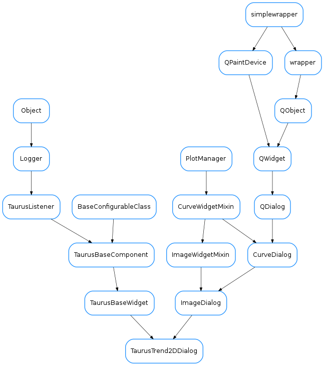

TaurusTrend2DDialog¶

-
class
TaurusTrend2DDialog(parent=None, designMode=False, toolbar=True, stackMode='deltatime', buffersize=512, options=None, autoscale='xyz', **kwargs)[source]¶ Bases:
guiqwt.plot.ImageDialog,taurus.qt.qtgui.base.taurusbase.TaurusBaseWidgetThis is a widget for displaying trends from 1D Taurus attributes (i.e., representing the variation over time of a 1D array). Sometimes this kind of plots are also known as “spectrograms”.
The widget shows a 3D plot (Z represented with colors) where the values in the 1D array are plotted in the Y-Z plane and are stacked along the X axis.
-
getMaxDataBufferSize()[source]¶ returns the maximum number of events that can be plotted in the trend
Return type: intReturns:
-
getUseArchiving()[source]¶ whether TaurusTrend is looking for data in the archiver when needed
Return type: boolReturns: See also
-
maxDataBufferSize¶ returns the maximum number of events that can be plotted in the trend
Return type: intReturns:
-
model¶ reimplemented from
TaurusBaseWidget
-
modifiableByUser¶ whether the user can change the contents of the widget
Return type: boolReturns: True if the user is allowed to modify the look&feel
-
setMaxDataBufferSize(maxSize)[source]¶ sets the maximum number of events that will be stacked
Parameters: maxSize ( int) – the maximum limitSee also
TaurusTrendSet
-
setStackMode(mode)[source]¶ set the type of stack to be used. This determines how X values are interpreted:
- as timestamps (‘datetime’)
- as time deltas (‘timedelta’)
- as event numbers (‘event’)
Parameters: mode ( one of 'datetime', 'timedelta'or'event') –
-
setUseArchiving(enable)[source]¶ enables/disables looking up in the archiver for data stored before the Trend was started
Parameters: enable ( bool) – if True, archiving values will be used if available
-
stackMode¶
-